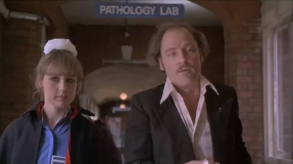

THE SQUEEZE (1977) – G-4 — CERTIFIED MGC G-4

🏛 MGC LOWER COURT OF APPEALS
- ASSET TITLE: The Squeeze (1977) – The Official British Crime Ledger
- OFFICIAL REGISTRY GRADE: Certified MGC G-4 (Good / Heavily Circulated Vintage Alloy)
- LOWER COURT JURISDICTION: Judge Tina, Chief of Cult Classics
- CASE FILE: #023
📜 THE FORENSIC NARRATIVE BREAKDOWN & RECOVERY
Judge Tina steps up to the steel desk👗👢👢swipes the fast food trash into the can and examines this rare, heavily circulated piece of 1970s London grit under the strict 5x magnifying lens.
1. Severe Structural Fatigue & Grime-Caked Pacing
- Under a cold, disciplined forensic review, The Squeeze (1977) exhibits notice-level circulation wear and severe material drag across its narrative layout. The cinematic alloy attempts to forge a gritty, high-stakes London underworld heist surrounding an alcoholic ex-cop who gets violently dragged into a brutal kidnapping-extortion plot. While the premise carries immense historical atmospheric luster for collectors of vintage British crime cinema, the tracking mechanics suffer from a severe pacing blemish.
- The second act experiences a heavy operational bottleneck, dropping into a slow, repetitive loop of back-alley arguments and bleak, uncalibrated domestic drama. Because it spends so much runtime stuck in a muddy narrative groove rather than accelerating the thriller engine, the asset experiences an immediate structural cap, preventing it from climbing into the VF or XF registers.
2. Heavily Circulated Character Profiles
- The execution represents a worn, heavily circulated specimen displaying sharp friction patterns under the lens. Stacy Keach turns in an incredibly raw, highly dedicated, and unglamorous performance as the broken, self-destructive protagonist, matched by the legendary, menacing presence of David Hemmings as the unhinged criminal mastermind.
- However, their powerhouse acting caliber is constantly working against a heavily scratched script surface. The character logic frequently stalls out due to predictable genre tropes, forced coincidences, and bleak narrative decisions that create a noticeable drag on the continuous linear gravity of the plot.
3. The Definitive G-4 Junk Box Ledger Allocation
- Let the permanent base registry reflect the unvarnished reality: The Squeeze sits securely within our heavily circulated boundaries, held back by technical oil leaks and considerable structural fatigue. A casual corporate reviewer would look at its depressing box-office history, write it off as an unpolished failure, and toss it aside. But the MGC High Court extracts the true value hidden within the vintage metal.
⚖️ THE CHIEF’S FINAL DECREE
Tina slams her lower-court gavel down onto the steel desk with a sharp, resonant ring.
- 💥Case closed.⚖️🔨👗

• © 2026 MOVIE GRADING CONSENSUS. All Sovereign Rights Reserved.